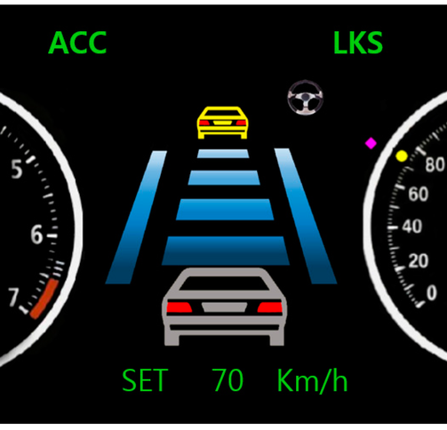

Adaptive Cruise Control
Coursework (Team Project - Spring 2025)
Numerical Methods & Control
This project modeled the longitudinal dynamics of a follower vehicle to maintain a safe, speed-dependent gap from a lead car. The study focused on comparing numerical integration methods and tuning PID performance. My contributions included:
- System Dynamics: Modeled vehicle motion under three regimes: steady-state cruising, acceleration, and emergency braking (0.8g).
- Control Architecture: Implemented a PID controller utilizing a "2-second rule" for gap safety. Tuned gains (Kp=0.5, Kd=0.8) to balance responsiveness with oscillation damping.
- Numerical Integration: Compared first-order Euler's Method against MATLAB's adaptive ODE45 (Runge-Kutta) solver. Proved ODE45 provided superior stability during transient events.
- Robustness Analysis: Evaluated system performance under sensor latency and variable lead-vehicle speeds (sinusoidal profiles) to ensure passenger comfort limits were met.
Control Loop & Simulation Specs
>> Simulation Constraints
[SOLVER] High Fidelity
ODE45
[RULE] Time Gap (τ)
2.0 sec
[GAIN] Kp / Kd
0.5 / 0.8
[LIMIT] Max Braking
0.8g (8 m/s²)
Feedback Loop
Gap_ref
(Target)
(Target)
Σ
PID
VEHICLE
DYNAMICS
DYNAMICS
Gap_act
(Out)
(Out)
SENSOR
LATENCY MODEL
Documentation Preview
Download PDFTech Stack
MATLAB
Simulink
System Dynamics
Runge-Kutta
Outcome
Delivered a stable control algorithm capable of maintaining safe following distances even with significant sensor data latency.